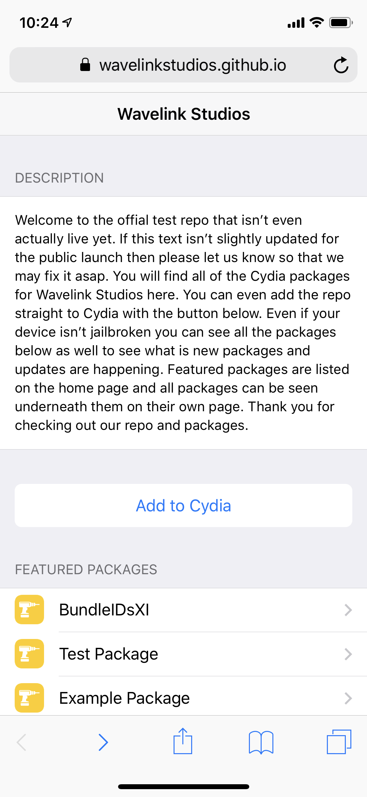

Description
This is just a test description for this test package. This depiction does not have a legitimate deb file linked with it. This is used for testing out new ideas for making the package depictions look nicee wirhout breaking an actual package or the example depiction template.
Photo Browser could be opened in a three ways - as a Standalone component (Popup modification), in Popup, and as separate Page:
Photo Browser suppots 2 default themes - default Light (like in previous examples) and Dark theme. Here is a Dark theme examples:
Screenshots
- All Screenshots
- 
Latest Changes
-
Change 1
-
Change 2
-
Change 3
-
Change 4
-
All Changes
Dependencies
- mobilesubstrate
- Dependency 2
Links